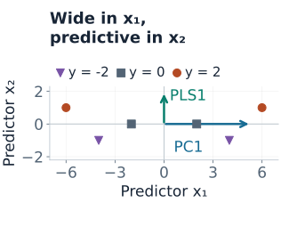
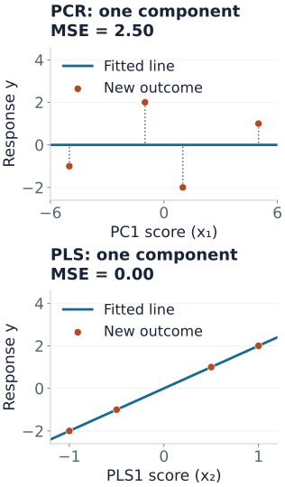

PCR and PLS
When many predictors move together, regression can spend many coefficients describing nearly the same information. Component methods replace the original columns with a smaller set of weighted combinations. The important question is which combinations to keep.
A score is a row's coordinate along a component direction. For example, a direction $w=(0.6,0.8)$ turns the row $(x_1,x_2)$ into the score $0.6x_1+0.8x_2$. A regression can then use a few scores instead of all original predictors.
| Method | How directions are chosen | What it returns |
|---|---|---|
| PCA | Large variation in $X$, without using $y$ | Directions and scores; no response prediction by itself |
| PCR | PCA directions, then a regression of $y$ on selected scores | A response prediction |
| PLS regression | Directions learned using both $X$ and $y$ | Response-aware scores and predictions |
PCR means principal component regression; PLS means partial least squares. Neither automatically selects a small set of original features: each component can mix many columns.
A Direction Can Explain Almost All of X and None of y
Use these six training rows with the noiseless response rule $y=2x_2$. The columns and response already have mean zero. We deliberately center without dividing by column standard deviations, so the stated raw-unit variances define the example.
| Row | $x_1$ | $x_2$ | $y$ |
|---|---|---|---|
| 1 | $-6$ | 1 | 2 |
| 2 | $-4$ | $-1$ | $-2$ |
| 3 | $-2$ | 0 | 0 |
| 4 | 2 | 0 | 0 |
| 5 | 4 | $-1$ | $-2$ |
| 6 | 6 | 1 | 2 |

The cross-products make the geometry exact:
$$X^\top X=\begin{pmatrix}112&0\\0&4\end{pmatrix},\qquad X^\top y=\begin{pmatrix}0\\8\end{pmatrix}.$$The first principal component is $x_1$. It captures $112/(112+4)\approx96.55\%$ of total predictor variation, yet $x_1^\top y=0$. Keeping enough components to explain 95% of $X$ would keep just this uninformative direction.
PCR: Choose Predictor Directions, Then Fit the Response
For centered predictors, write the singular value decomposition $X=UDV^\top$. Columns of $V$ are principal directions; squared singular values in $D$ measure their sums of squares. Keeping the first $k$ directions gives scores
$$Z_k=XV_k=U_kD_k.$$Regress centered $y$ on $Z_k$ to estimate $\hat\gamma$. In the same predictor coordinates, $\hat\beta=V_k\hat\gamma$. For a new row, subtract the training centers, project with the fitted directions, predict from its scores, and restore the training response mean.
In the example, one-component PCR uses score $z=x_1$. Its score coefficient is
$$\hat\gamma=\frac{x_1^\top y}{x_1^\top x_1}=\frac0{112}=0.$$Both training and new rows therefore receive prediction zero. The failure happened when the second direction was discarded; the subsequent regression cannot recover it. Keeping both components recovers ordinary least squares here and predicts $2x_2$.
PCA construction is response-blind, but choosing $k$ by validation uses response information. The PCA documentation also makes the preprocessing distinction explicit: PCA centers inputs but does not automatically scale each feature to unit variance.
PLS: Let the Response Help Choose the Direction
For centered $X$ and a single centered response, a common first PLS direction maximizes squared covariance between $Xw$ and $y$, subject to $\lVert w\rVert=1$. When $X^\top y\ne0$, this gives
$$w_1=\frac{X^\top y}{\lVert X^\top y\rVert},\qquad t_1=Xw_1.$$Our cross-product is $(0,8)^\top$, so $w_1=(0,1)^\top$ and $t_1=x_2$. Regressing $y$ on this score gives coefficient $8/4=2$. One component now preserves the direction needed for prediction.
PLS maximizes a covariance criterion, not test accuracy or pure correlation. It can favor directions with large scale or chance response associations. Response awareness is useful information, but also another opportunity to fit noise.
For later components, PLS removes fitted structure from predictor and response matrices, a process called deflation, then finds another direction. Algorithms differ in normalization and deflation. PLS weights construct scores, while loadings describe reconstruction; they are not generally interchangeable. Use the fitted transformation for new rows instead of assuming every reported loading is a projection vector. The cross-decomposition guide explains these distinctions.
Check the Fitted Projections on Unused Rows
Freeze the one-component models fitted above. Use four new rows generated by the same rule $y=2x_2$. They were not used to estimate centers, directions, or regression coefficients.
| New $(x_1,x_2)$ | Observed $y$ | PCR, one component | PLS, one component |
|---|---|---|---|
| $(-5,-0.5)$ | $-1$ | 0 | $-1$ |
| $(-1,1)$ | 2 | 0 | 2 |
| $(1,-1)$ | $-2$ | 0 | $-2$ |
| $(5,0.5)$ | 1 | 0 | 1 |

PCR's held-out MSE is $(1+4+4+1)/4=2.5$; PLS has MSE zero. Two-component PCR also has MSE zero. This counterexample shows why a variance threshold can discard signal; four designed test rows do not establish a general performance advantage for PLS. If the response instead depended only on $x_1$, both methods could succeed with one component.
Reproduce the models and predictions
import numpy as np
from sklearn.cross_decomposition import PLSRegression
from sklearn.decomposition import PCA
from sklearn.linear_model import LinearRegression
from sklearn.pipeline import make_pipeline
X = np.array([[-6, 1], [-4, -1], [-2, 0], [2, 0], [4, -1], [6, 1.]])
y = 2 * X[:, 1]
X_test = np.array([[-5, -.5], [-1, 1], [1, -1], [5, .5]])
y_test = 2 * X_test[:, 1]
models = {
"PCR 1": make_pipeline(PCA(n_components=1), LinearRegression()),
"PLS 1": PLSRegression(n_components=1, scale=False),
"PCR 2": make_pipeline(PCA(n_components=2), LinearRegression()),
}
for name, model in models.items():
model.fit(X, y)
prediction = np.asarray(model.predict(X_test)).ravel()
print(name, np.round(prediction, 3), np.mean((y_test - prediction)**2))PLSRegression scales by default, so scale=False is intentional here. The figure source independently derives the directions and coefficients with NumPy, compares them with these estimators, and reproduces both figures. The scikit-learn PCR/PLS example explores the same distinction with a different noisy dataset.
Scaling and Validation Are Part of the Model
A feature in dollars can dominate one in years because of units alone. Standardizing columns is often sensible when their scales are not meaningfully comparable, but it changes both PCR and PLS directions. In our example, standardizing the two orthogonal columns makes their variances equal: the first PCA direction is then not uniquely determined by variance. The raw-unit 96.55% statement no longer applies.
For an ordinary held-out prediction task, fit the complete procedure inside each training fold:
- Split first. Preserve time or groups when deployment requires it.
- Fit preprocessing on training rows. Learn imputation, centers, and any scales there.
- Fit components and score coefficients. PCR uses training $X$ for directions; PLS also uses training $y$.
- Select component count with inner validation. Refit preprocessing and components for each fold and candidate, rather than reusing a full-data transformation.
- Evaluate the selected pipeline on untouched test data. Once test results drive further choices, those data are no longer an independent final test.
Even PCA fitted on all predictors sees held-out structure. PLS fitted before a split also sees held-out outcomes. The scikit-learn leakage guide explicitly includes PCA among transformations that belong inside the training procedure.
Select $k$ for held-out response performance rather than cumulative predictor variance alone. With few observations, supervised PLS directions can be unstable. Compare PCR and PLS under the same split and preprocessing policy, and include ordinary or regularized regression as a baseline.
How This Differs from Ridge and Lasso
| Method | How flexibility is controlled | What can go wrong |
|---|---|---|
| PCR | Deletes discarded principal directions entirely | Low-variance signal can be removed |
| PLS | Limits the number of response-aware components | Directions can capture chance response associations |
| Ridge | Shrinks every singular direction continuously | Useful weak directions can still be over-shrunk |
| Lasso | Can set original-feature coefficients to zero | Selection among correlated predictors can be unstable |
For ridge under a sum-of-squares objective, each OLS coefficient in a nonzero singular direction is multiplied by $d_j^2/(d_j^2+\lambda)$. PCR uses a hard keep-or-delete rule instead. See regularization and numerical solvers for the underlying geometry.
What to Inspect Before Interpreting Components
- Signs are arbitrary. Flipping a direction and its score coefficient together leaves predictions unchanged.
- Tied singular values permit rotations. Individual principal directions can be unstable even when their joint subspace is stable.
- Rank limits usable components. For centered data, rank is at most $\min(n-1,p)$; redundant or constant columns can lower it further.
- Original units matter. Back-transform coefficients after scaling before interpreting their magnitude.
- Retained components are not selected causes. A predictive score can mix correlated variables without identifying any variable's causal effect.
Quick Checks
| Question | Answer |
|---|---|
| Does PCA itself predict $y$? | No. PCR adds a response regression after PCA. |
| Why does one-component PCR predict zero here? | Its retained score is $x_1$, whose cross-product with centered $y$ is zero. |
| Does PLS always beat PCR? | No. Its use of the response can find signal or fit noise; evaluate the full pipeline on unused data. |
| Does scaling fix the comparison automatically? | No. Scaling changes the geometry and must match the data's units and validation procedure. |